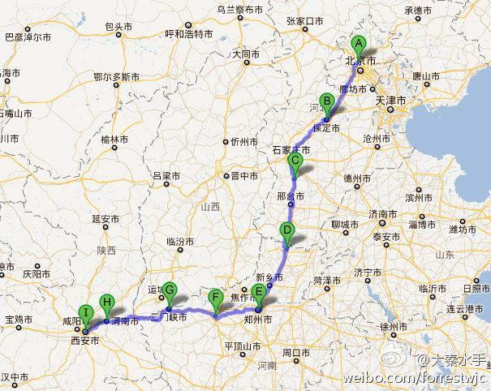

你一个人吗? 真是自虐呀. 我有个国庆期间有个来回1700公里自驾走高速的方案, 现在都没拍板, 觉得还是宅家里舒服且心情舒畅.@那个水手在路上:谋划了很久，现在一切都已就绪，明天就要出发，从北京到西安。端午节的时候，花了两天骑到山海关，算是为这次长骑做练习，让我知道上路要注意些什么，准备些什么。比如说，不要夜骑，要戴围巾等等。总共大约1300公里的路程，要骑7-8天。这个假期一定会很充实。:-D 